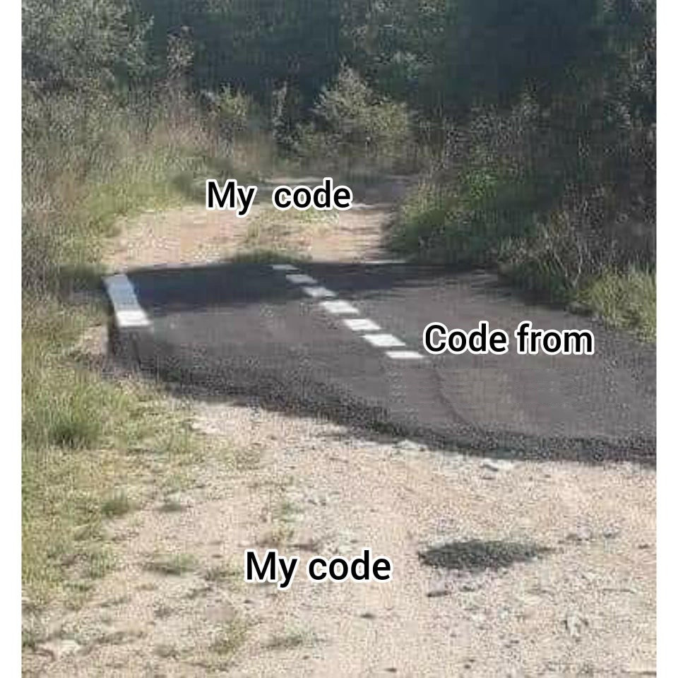

TP : balles rebondissantes⚓︎

1. Prise en main de Pygame⚓︎
1 2 3 4 5 6 7 8 9 10 11 12 13 14 15 16 17 18 19 20 21 22 23 24 25 26 27 28 29 30 31 32 33 | |
1.1 Rajout d'un rebond sur les parois⚓︎
Modifiez le code précédent afin que la balle rebondisse sur chaque paroi (il suffit de modifier intelligemment les variables de vitesse dx et dy).
1.2 Rajout d'une deuxième balle⚓︎
Attention au nommage des variables...
1.3 Gestion de la collision entre les deux balles⚓︎
- À l'aide d'un schéma (papier-crayon !), mettez en évidence le test devant être réalisé pour détecter une collision.
- Implémentez ce test et affichez "collision" en console lorsque les deux balles se touchent.
Q3. Pour l'illusion du rebond, échangez les valeurs respectives de dx et dy pour les deux balles.
1.4 Rajout d'une troisième balle et gestion du rebond avec les deux autres.⚓︎
... vraiment ? Peut-on continuer comme précédemment ?
2. La POO à la rescousse : création d'une classe Balle⚓︎
2.1 la classe Balle⚓︎
L'objectif est que la méthode constructeur dote chaque nouvelle balle de valeurs aléatoires : abscisse, ordonnée, vitesse, couleur...
Créez cette classe et instanciez une balle.
Puis plusieurs balles ! (qui se collisionnent...)
Dépôt de projet sur Capytale : fd7c-59906
Servez-vous de cette feuille de projet pour y déposer les différentes versions de votre travail. Je pourrai ainsi le consulter au fur et à mesure de votre progression.
Ce que je ne veux pas voir : 